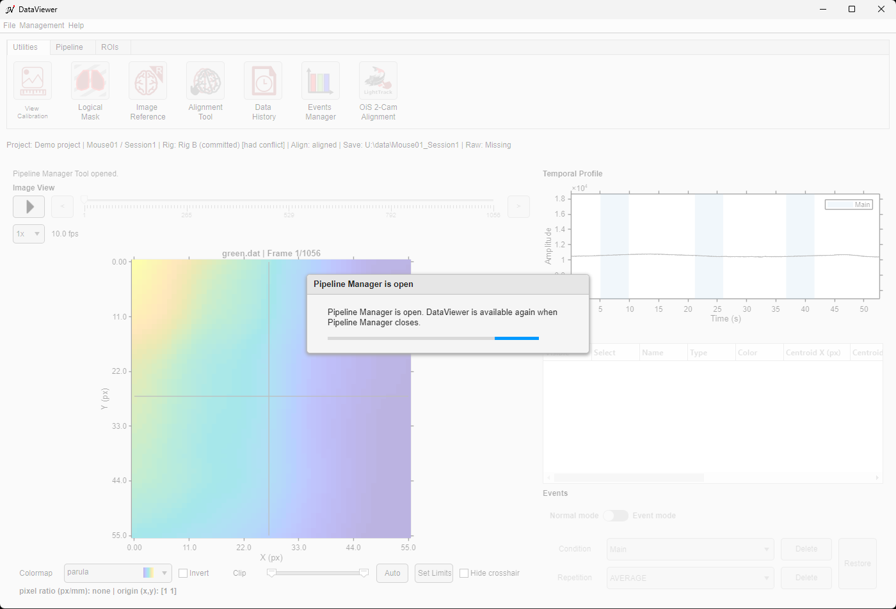
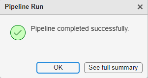
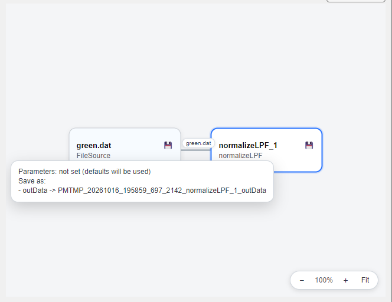
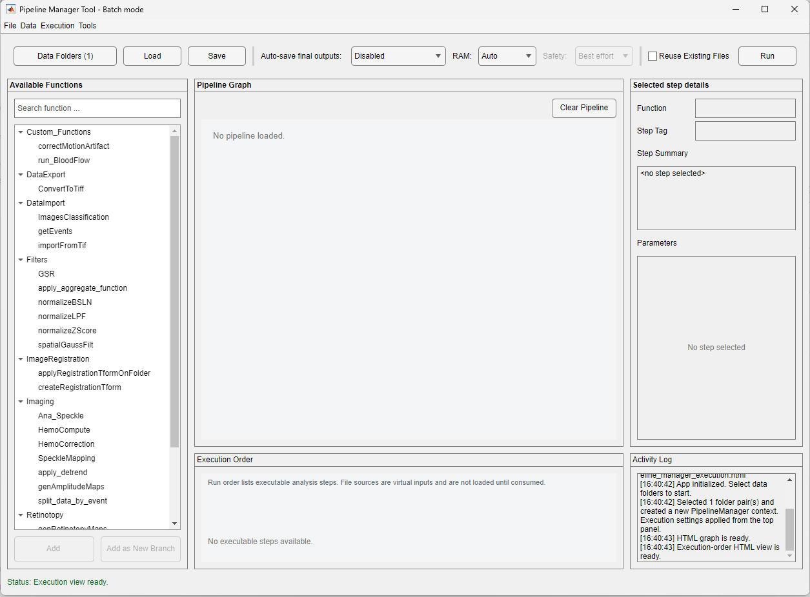

The current file is the starting point of the graph. The selected step shows its summary and its editable parameters. Function categories come from live PipelineManager discovery.
Pipeline Manager builds a directed acyclic graph (DAG): a sequence of analysis functions in which arrows show how data moves from one operation to the next. The included functions cover common widefield-imaging processing and analysis workflows. If you want to create a custom analysis function of your own, see Creating analysis functions for PipelineManager.
The manager records which functions and parameters produced each result, chooses an execution order, and reduces memory use by passing large data through files when appropriate. Its graph makes parallel and sequential processing paths visible before the pipeline runs.
From DataViewer, load a .dat or image-kind .umt, open the Pipeline tab, and choose Pipeline Manager. The current file is already present as the protected input node.
To open the standalone app from MATLAB:
PipelineManagerTool;Choose Data Folders before adding steps in standalone mode.
When the tool is opened from DataViewer (including batch mode), DataViewer shows a progress dialog titled Pipeline Manager is open and cannot be used until the tool is closed; closing the tool removes the dialog. The tool itself is a normal window with its own menu bar (File, Data, Execution, Tools). A standalone PipelineManagerTool does not block anything.

The current file is the starting point of the graph. The selected step shows its summary and its editable parameters. Function categories come from live PipelineManager discovery.
Available analysis functions are listed on the left. The middle shows the pipeline graph and execution order. The right side summarizes the selected step and its parameters. File, data, execution, and inspection controls are along the top; run progress and the activity log are at the bottom.
| Area/control | Purpose |
|---|---|
| Available Functions + search | Filters discovered functions by category and name. |
| Add / Add as New Branch | Adds a compatible step and prompts for required sources. |
| Pipeline Graph | Shows sources, steps, connections, persistence markers, and selection, with zoom controls (see Graph interactions). |
| Selected step details | A compact Step Summary (inputs, outputs, "save as" names) and the Parameters panel, where the options of the selected step are edited directly and confirmed with Apply or restored with Reset. A step without options shows No parameters; a step whose options were never changed shows Parameters: not set (defaults will be used). |
| Data Folders | Opens the table of Save Folder/Raw Folder pairs (the number of pairs is shown on the button). |
| Execution Order | Shows the runnable order and virtual inputs. |
| Load, Save, Clear Pipeline | Loads, saves, or clears the graph after applicable confirmation. |
| Auto-save final outputs | Controls automatic saving of outputs from the last steps. This choice is fixed to temporary viewer results when the app is opened from DataViewer. |
| RAM / Safety | Selects automatic or RAM-safe planning and the safety policy. |
| Reuse Existing Files | Allows compatible outputs already on disk to satisfy steps. |
| Run / Stop | Reviews and executes the graph, or requests a cooperative stop. |

The graph fits itself to the view. Zoom with the mouse wheel or the − / + buttons, drag the background to pan, and choose Fit or double-click the background to show the whole graph again. Hovering over a step shows whether its parameters were set and the names its outputs will be saved as.

| Action | How and why |
|---|---|
| Select a step | Click a node to show its summary and parameters on the right. |
| Edit parameters | Select the step and use the Parameters panel (Apply / Reset). |
| Reconnect inputs | Right-click and choose Reconnect inputs, select the input to change, then click a highlighted compatible source or choose a file. |
| Save outputs | Right-click and choose Save Outputs to select which step outputs should persist. |
| Remove a step | Right-click and choose Remove step. Downstream connections are rechecked; the protected DataViewer source cannot be removed. |
| Clear the graph | Clear Pipeline removes all steps after confirmation but keeps the selected folders and execution settings. |
Add as New Branch starts another path instead of extending the currently selected path. Use branches when one pipeline should process several input files or generate two independent results from the same source. The graph shows where branches share an input and where they remain separate.
Choose File > Generate Script to export the current graph as a MATLAB script. The generated script reproduces the configured steps, connections, parameters, data folders, and execution settings. Review the file paths before running it on another computer.
To run one pipeline on several recordings from DataViewer, choose File > Batch pipeline... (or right-click the Pipeline Manager button of the Pipeline tab and choose Batch mode...). The tool opens as Pipeline Manager Tool - Batch mode: it works on folder pairs instead of the open file, and the import functions (ImagesClassification, importFromTif, getEvents) are available. The folders of the file open in DataViewer pre-fill the first pair.

Data Folders builds a table of Save Folder/Raw Folder pairs. Add folders one at a time or discover child Save Folders, filter the list, set a Raw Folder, use the Save Folder as its own raw source, mark unavailable raw data as Missing, and enable or disable rows. Invalid or duplicate Save Folders block the run. A step that requires raw data skips a row marked Missing rather than guessing a location.
Before running, every folder is checked (preflight). A folder that fails a check of its own, for example a rig-dependent step such as HemoCompute on a folder without a usable rig ledger, is skipped and logged as Failed with the reason, and the other folders run. If every folder fails, the run stops before any work starts.
With Reuse Existing Files on, re-running an unchanged pipeline skips the steps whose outputs are already on disk with a matching history; this also works for temporary results (PMTMP_* files), which are shown again instead of being recomputed. When DataViewer shows a result of the pipeline, the original input of the pipeline is kept, so the pipeline can be run again. When the tool is reopened, the last step is selected.
Results of rig-dependent steps computed before a folder's rig conflict was acknowledged are never reused: those steps are recomputed, and the old files stay on disk.
| Setting | Meaning |
|---|---|
| Reuse existing files | Uses an existing output only when its recorded pipeline history matches; disable it to force re-execution. |
| Avoid overwriting existing files | Chooses another available output filename when possible. |
| Save recovery data on failure | Saves the latest available data when a step fails, when possible. |
Open the dialog with Execution > Execution Settings.... Auto-save final outputs is a control of the main window rather than of this dialog: Disabled saves only explicitly selected outputs; Enabled saves final branch outputs; Enabled as temporary files creates viewer-managed temporary results.
RAM: Auto lets the manager keep data in memory when estimates show that enough memory is available. RAM-safe prefers disk-backed processing for compatible functions. Strict blocks a plan that cannot meet its RAM rules; Best effort allows the manager to continue with warnings when a complete low-memory path is unavailable.
Execution > Advanced RAM Settings exposes four planning controls:
| Control | Default | Meaning |
|---|---|---|
| Lookahead length | 2 | Number of downstream steps considered when deciding whether to retain or reload data. |
| Cooldown steps | 2 | Number of steps an intermediate result may remain in memory before release. |
| Safety overhead fraction | 0.15 | Fraction of available memory reserved as overhead (15% by default). |
| Data size multiplier | 2.0 | Multiplier applied to estimated data size to account for working copies. |
| Command | Purpose |
|---|---|
| Show Execution Plan | Lists executable steps, virtual inputs*, run order, and issues before execution. |
| Remove Invalid Steps | Removes steps that cannot be made runnable after validation. |
| Show Latest Run Summary | Displays completed, skipped, failed, and output rows from the most recent run. |
| View Folder Pipeline Log | Loads pipeLog.mat for a selected enabled Save Folder. |
| Export Error Log | Writes detailed diagnostic text for sharing or later review. |
* Virtual input
A virtual input is a file or value that supplies a step without being produced by another step in the graph. Examples include the current DataViewer file and a file selected from the Save Folder.
In standalone mode, saved final or explicitly selected outputs are written to each Save Folder using the function's declared file name. In DataViewer mode, compatible image results are offered for immediate display and are temporary by default; non-image reports and terminal results remain saved files when the function creates or requests them.
| Item | Contents |
|---|---|
| Pipeline file | The saved graph, connections, parameters, and execution choices. Written only by Save Pipeline. |
| dataHistory.mat | For each output, the functions, versions, inputs, and parameters that produced it. |
| pipeLog.mat | Per-step execution status, timing, messages, inputs, and outputs for that Save Folder. |
| Temporary image results | Viewer-managed files removed when their lifecycle ends unless the user saves a permanent copy. |
Read function-specific warnings before running.
Some functions change an entire folder. For example, data-import functions can replace classified output files, and applyRegistrationTformOnFolder rewrites every image .dat and image .umt file. Review the function documentation, execution plan, and confirmation dialog.